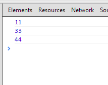

前言
条件逻辑往往十分复杂，我们今天就看看有哪些怎样才能够简化条件表达式的逻辑
分解条件表达式，可以将条件逻辑分成若干小块，这样就可以将分支逻辑与操作细节分离
合并条件表达式
我们代码中如果出现一系列条件测试，而且他们都获得相同的结果，那么将这些测试合并为一个条件表达式，并将这个表达式提炼为一个独立函数
有时候我们会发现这样一连串检查，检查条件各不相同，最终的行为却一致，如果出现这种情况，就应该使用“逻辑或”和“逻辑与”将它们合并为一个条件表达式
之所以要合并条件代码，有两个重要原因，首先，合并后的条件代码会告诉你实际上只有一次条件检查，只不过有多个并列条件需要检查而已
从而使这一次检查的用意更清晰，当然，合并前与合并后的代码有相同的效果，但原先代码传达的信息却是“这里有一些各自独立的条件测试，他们只是刚好同时发生”，这项重构往往可以为你提炼方法做准备
但是如果条件检查却是是独立的，不是同一次检查，就不要使用此项重构
1 function disabilityAmount() { 2 if (_a < 2) return 0; 3 if (_b > 12) return0; 4 if (_c) return0; 5 } 6 //改成这个样式 7 function disabilityAmount() { 8 if (isNotEligibleForDisablity()) return 0; 9 } 10 function isNotEligibleForDisablity() { 11 return (_a < 2) && (_b > 12) && (_c); 12 }
合并重复的条件片段
在条件表达式的每个分支上有着相同的一段代码，那么将这段代码搬到条件表达式外面
有时候我们发现我们的代码中一组条件表达式的所有分支都执行了相同的某段代码，这个时候我们应该将这段代码搬到条件表达式外面去
这样代码才能更清楚的表达哪些东西随条件变化而变化，哪些东西保持不变
1 if (isSpecialDeal()) { 2 total = price * 0.95; 3 send(); 4 } else { 5 total = price * 0.98; 6 send(); 7 } 8 //重构 9 if (isSpecialDeal()) { 10 total = price * 0.95; 11 } else { 12 total = price * 0.98; 13 } 14 send();
移除控制标记
在一系列布尔表达式中，某个变量带有控制标记（control flag）的作用，那么以break语句或者return取代之
这样的控制标记带来的麻烦超过了他带来的便利，人们之所以会使用这样的控制标记，是因为结构化编程原则告诉我们
每个子程序只能有一个入口和出口
单一入口是对的，但是单一出口则会让我们的代码增加讨厌的控制标记，降低程序可读性，这就是break与continue出现的原因（用它跳出复杂的条件语句），去掉控制标记的效果会让你大吃一惊（据说会让条件语句清晰不少）
怎么做
① 对控制标记的处理，最显而易见的办法就是使用break与continue语句
② 找出跳出逻辑的标记值
③ 找出对标记变量赋值的语句，替换为break或continue
④ 替换后测试
也可以使用以下方法
① 将整段逻辑提炼为一个函数
② 找出跳出逻辑的控制标记替换为return
return语句可以清晰的表述清楚不再执行函数中的其它任何代码，于是我们来个例子吧
1 function checkSecurity(people) { 2 var found = false; 3 for (var i = 0; i < people.length; i++) { 4 if (!found) { 5 if (people[i] == 'Don') { 6 sendAlert(); 7 found = true; 8 } 9 if (people[i] == 'John') { 10 sendAlert(); 11 found = true; 12 } 13 } 14 } 15 } 16 17 //这种情况控制标记很容易找出，稍微变一下就可以了： 18 19 function checkSecurity(people) { 20 for (var i = 0; i < people.length; i++) { 21 if (people[i] == 'Don') { 22 sendAlert(); 23 break; 24 } 25 if (people[i] == 'John') { 26 sendAlert(); 27 break; 28 } 29 } 30 } 31 32 //我们甚至可以将里面判断的逻辑独立为一个函数 33 function findInSet(names, arr) { 34 if (typeof names != 'object') names = [names]; 35 for (var k in names) { 36 for (var i = 0, len = arr.length; i < len; i++) { 37 if (arr[i] == names[k]) return true; 38 } 39 } 40 return false; 41 } 42 function checkSecurity(people) { 43 for (var i = 0; i < people.length; i++) { 44 if (findInSet(['Don', 'John'], people)) { 45 sendAlert(); 46 break; 47 } 48 } 49 }
以卫语句取代嵌套条件表达
在函数中的条件逻辑使人难以看清楚正常的执行路径，这个时候可以使用卫语句表现所有特殊情况
1 function getPayAmount() { 2 var result; 3 if (this.isDead) { result = this.deadAmount(); } else { 4 if (this.isRetired) result = this.retiredAmount(); 5 else result = this.nomalAmount() 6 } 7 return result; 8 } 9 10 // 11 function getPayAmount() { 12 var result; 13 if (this.isDead) return this.deadAmount(); 14 if (this.isRetired) return this.retiredAmount(); 15 return this.nomalAmount() 16 }
根据经验，条件表达式通常有两种表现形式，第一种形式是：所有分支都属于正常行为，第二种形式则是条件表达式提供的答案中只有一种是正常行为，其他都是不正常见的情况
这两类条件表达式有不同的用途这一点应该通过代码表现出来，如果两条分支都是正常行为，就应该使用if else 了
如果某个分支及其罕见，就应该单独检查该条件，并在该条件为真时从函数返回，这样的检查就是传说中的“卫语句”
该重构方法的精髓就是给某个分支特别重视，如果使用if else，你对if和else重视是同等的
卫语句就告诉用户，这种情况罕见，但是真的发生了就需要做一些整理工作了
每个函数都只能有一个入口和一个出口，这个思想可能需要更新下了，作者认为代码清晰最重要（我也认为单一出口有用......）
以多态取代条件表达式
你手上有多个条件表达式，它根据对象类型的不同而选择不同的行为
那么将这个条件表达式的每个分支放进一个子类内的复写函数中，然后抽象原始函数声明
面向对象术语中，“多态”一词尤其高端大气上档次，多态的最大好处就是
如果你需要根据对象的不同类型二采取不同的行为，多态让我们不同写明显的条件表达式
多态能够带来很多好处，如果同一组条件表达式在程序许多地点出现，那么使用多态的收益是最大的
使用条件表达式时，如果你想添加一种写类型，就必须查找并更新更多的条件表达式
如果改用多态，只需建立一个新的子类，并在其中提供适当的函数就行了，类的用户不需要了解这个子类，大大降低依赖
怎么做
使用简化条件表达式之前，首先必须有一个继承关系，我们一般使用以子类取代类型码，
但如果需要在对象创建好自豪修改类型码，就要使用state/strategy模式
① 如果处理的条件表达式是一个更大函数的一部分，首先分析条件表达式，然后提炼函数分离到独立函数
② 如果有必要使用移动方法将条件表达式放到继承的顶端
③ 任选一个子类，在其中建立一个函数，使之复写超类中容纳条件表达式的函数，将与该子类相关的条件表达式的分支复制到新函数中
④ 针对条件表达式的每个分支，重复上述过程，直到所有分支都移动到子类函数
来个例子吧，说多了意义不大
首先这是我们要用到的工具类：


1 var base = {}; 2 var slice = [].slice; 3 var bind = function (scope, fun, args) { 4 args = args || []; 5 return function () { 6 fun.apply(scope, args.concat(slice.call(arguments))); 7 }; 8 }; 9 10 base.Class = function (supClass, childAttr) { 11 //若是第一个是类，便是继承；如果第一个是对象，第二个参数无意义，便是新建一个类 12 if (typeof supClass === 'object') { 13 childAttr = supClass; 14 supClass = function () { }; 15 } 16 //新建临时类，最后作为新类返回，可能是继承可能是新类 17 /*** 18 这里非常关键，为整个方法的入口，一定得看到初始化后，这里会执行构造函数 19 ***/ 20 var newClass = function () { 21 //每个类都会使用该函数，作为第一步初始化，告诉类有哪些属性 22 this._propertys_ && this._propertys_(); 23 //第二步初始化，相当于子类的构造函数，比较重要，初始化方法不一定会出现 24 this.init && this.init.apply(this, arguments); 25 }; 26 //发生继承关系，可能为空类 27 newClass.prototype = new supClass(); 28 29 //新建类必定会包含初始化函数，要么继承，如果没继承，这里也会新建 30 var supInit = newClass.prototype.init || function () { }; 31 //传入的子对象可能包含他的初始化方法，如果有一定要使用，至于父类使用与否看子类心情 32 var childInit = childAttr.init || function () { }; 33 //父类的properys方法便是指定会具有哪些属性，一定会执行 34 var _supAttr = newClass.prototype._propertys_ || function () { }; 35 //子类的初始化也一定会触发，先执行父类再执行子类 36 var _childAttr = childAttr._propertys_ || function () { }; 37 38 //为新建类（可能继承可能新建）初始化原型，上面的会重写，没有就不管他 39 for (var k in childAttr) { 40 childAttr.hasOwnProperty(k) && (newClass.prototype[k] = childAttr[k]); 41 } 42 43 //处理继承情况 44 if (arguments.length && arguments[0].prototype && arguments[0].prototype.init === supInit) { 45 //根据父类重写新建类构造时会用到的方法 46 newClass.prototype.init = function () { 47 var scope = this; 48 var args = [function () { 49 //第一个参数为父类的初始化函数，执行与否看子类心情 50 supInit.apply(scope, arguments) 51 } ]; 52 childInit.apply(scope, args.concat(slice.call(arguments))); 53 }; 54 } 55 //前面说到的，父类与子类的初始化方法一定会执行，先父后子 56 newClass.prototype._propertys_ = function () { 57 _supAttr.call(this); 58 _childAttr.call(this); 59 }; 60 61 //成员属性也得继承 62 for (var k in supClass) { 63 supClass.hasOwnProperty(k) && (newClass[k] = supClass[k]); 64 } 65 return newClass; 66 };
1 var EmployeeType = base.Class({ 2 _propertys_: function () { 3 }, 4 init: function (code) { 5 switch (code) { 6 case EmployeeType.ENGINEER: return new Engineer(); 7 case EmployeeType.SALESMAN: return new Saleman(); 8 case EmployeeType.MANAGER: return new Manager(); 9 default: throw 'incorrect employee code'; 10 } 11 }, 12 payAmount: function (emp) { 13 switch (this.getType()) { 14 case EmployeeType.ENGINEER: return rmp.getMonthlySalary(); 15 case EmployeeType.SALESMAN: return emp.getMonthlySalary() + emp.getCommission(); 16 case EmployeeType.MANAGER: return emp.getMonthlySalary() + emp.getBonus(); 17 default: throw 'incorrect employee'; 18 } 19 } 20 }); 21 EmployeeType.ENGINEER = 0; 22 EmployeeType.SALESMAN = 1; 23 EmployeeType.MANAGER = 2; 24 25 var Employee = base.Class({ 26 _propertys_: function () { 27 this.monthlySalary; 28 this.commission; 29 this.bonus; 30 }, 31 init: function (type) { 32 this.type = new EmployeeType(type); 33 }, 34 getMonthlySalary: function () { 35 return this.monthlySalary; 36 }, 37 getCommission: function () { 38 return this.commission; 39 }, 40 getBonus: function () { 41 return this.bonus; 42 }, 43 payAmount: function () { 44 return this.type.payAmount(); 45 } 46 });
简单调整
1 /*逻辑代码*/ 2 var EmployeeType = base.Class({ 3 _propertys_: function () { 4 }, 5 getType: function (code) { 6 switch (code) { 7 case EmployeeType.ENGINEER: return new Engineer(); 8 case EmployeeType.SALESMAN: return new Saleman(); 9 case EmployeeType.MANAGER: return new Manager(); 10 } 11 }, 12 payAmount: function (emp) { 13 // switch (this.getType()) { 14 // case EmployeeType.ENGINEER: return rmp.getMonthlySalary(); 15 // case EmployeeType.SALESMAN: return emp.getMonthlySalary() + emp.getCommission(); 16 // case EmployeeType.MANAGER: return emp.getMonthlySalary() + emp.getBonus(); 17 // default: throw 'incorrect employee'; 18 // } 19 } 20 }); 21 EmployeeType.ENGINEER = 0; 22 EmployeeType.SALESMAN = 1; 23 EmployeeType.MANAGER = 2; 24 25 var Engineer = base.Class(EmployeeType, { 26 init: function (_superInit_) { 27 }, 28 payAmount: function (emp) { 29 return emp.getMonthlySalary(); 30 } 31 }); 32 var Saleman = base.Class(EmployeeType, { 33 init: function (_superInit_) { }, 34 payAmount: function (emp) { 35 return emp.getMonthlySalary() + emp.getCommission(); 36 } 37 }); 38 var Manager = base.Class(EmployeeType, { 39 init: function (_superInit_) { }, 40 payAmount: function (emp) { 41 return emp.getMonthlySalary() + emp.getBonus(); 42 } 43 }); 44 45 var Employee = base.Class({ 46 _propertys_: function () { 47 this.monthlySalary = 11; 48 this.commission = 22; 49 this.bonus = 33; 50 }, 51 init: function (type) { 52 this.type = new EmployeeType(); 53 this.type = this.type.getType(type); 54 }, 55 getMonthlySalary: function () { 56 return this.monthlySalary; 57 }, 58 getCommission: function () { 59 return this.commission; 60 }, 61 getBonus: function () { 62 return this.bonus; 63 }, 64 payAmount: function () { 65 return this.type.payAmount(this); 66 } 67 }); 68 69 var e0 = new Employee(0); 70 var e1 = new Employee(1); 71 var e2 = new Employee(2); 72 73 console.log(e0.payAmount()); 74 console.log(e1.payAmount()); 75 console.log(e2.payAmount());

结语
这次是初次学习重构，一些没明白的，我们二次学习再搞懂吧